Ópíum
Útgefin: 2024
Væntanleg 2024.
Illgresi andskotans
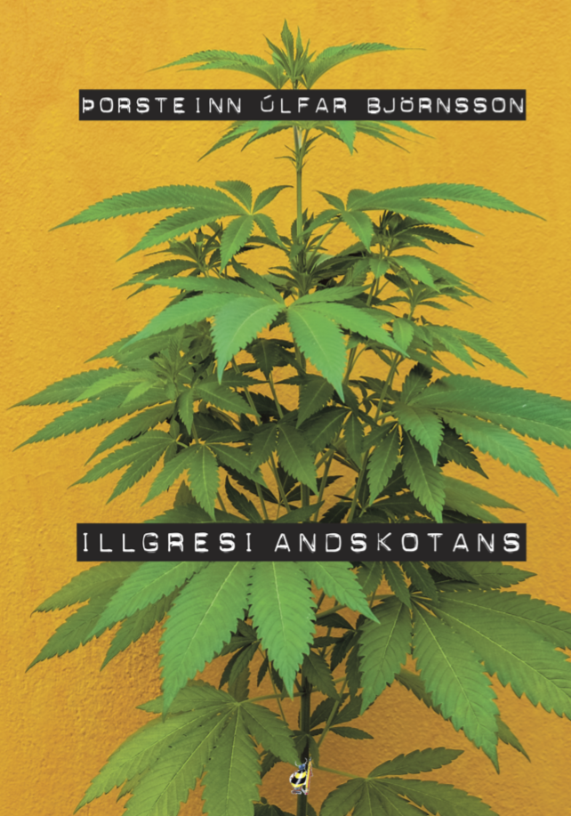Útgefin: 2022
Illgresi andskotans fjallar um plöntuna hamp Cannabis sativa L. Þetta er ekki bók um vímuefni heldur verðmæta nytjaplöntu. Gífurleg fjölhæfni einkennir hana og sem betur fer er viðhorfið gagnvart henni að breytast.
Lögvíma
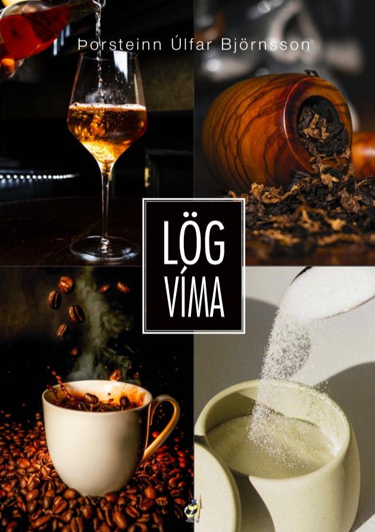Útgefin: 2022
Lögvíma fjallar um löglegu vímuefnin sem við flest notum, áfengi, tóbak, kaffi og sykur. Flestir hafa takamarkaða hugmynd um hvað þessi efni eru í raun og hvað þau eru að gera neytendum.
FUNGA, ríki sveppakóngsins
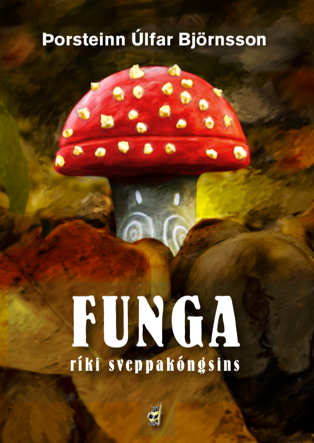Útgefin: 2021
Þessi bók átti að vera framhald á bókinni Villigarðurinn, garðyrkjuhandbók letingjans sem kom út 1997 en stundum fara jafnvel bestu áætlanir veg allrar veraldar og verkið verður allt annað en lagt var upp með.
Drugs! Use or Abuse?
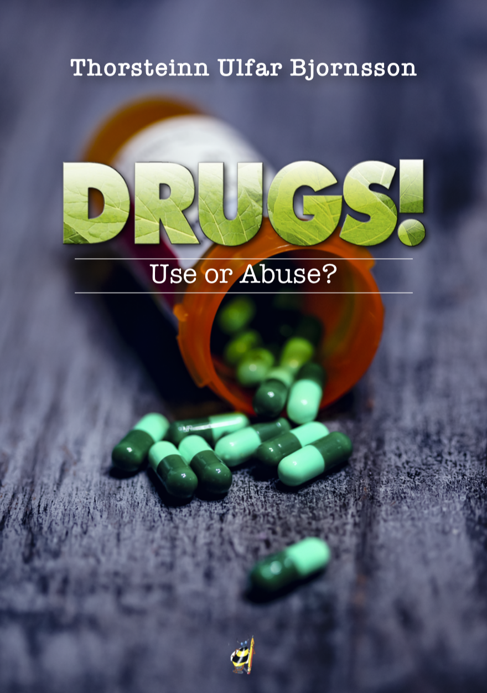Útgefin: 2020
Manual for responsible recreational use of almost all drugs that humans use and should be read by young people in the company of parents or guardians. It's about harm reduction and steps that can be taken to minimise the risk of using drugs. English edition of DÓP!, published in 2012.
Hampur – Inni/úti ræktunarleiðbeiningar
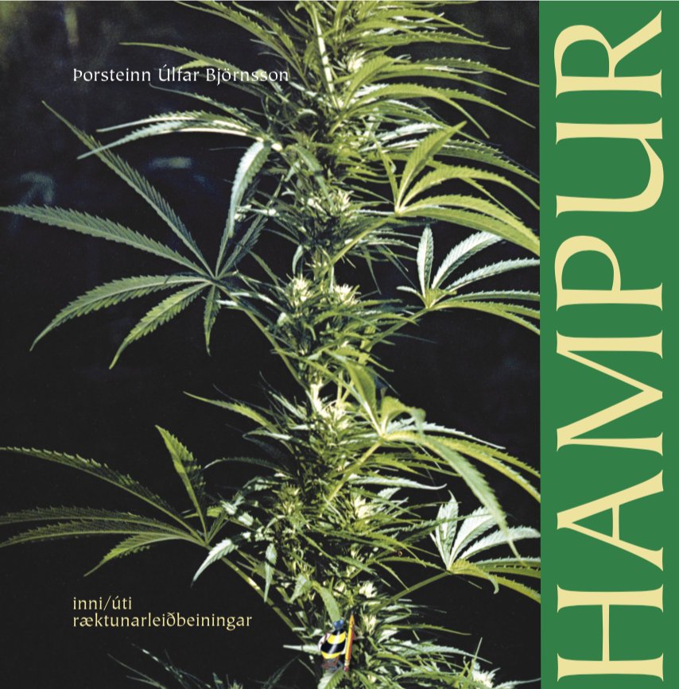Útgefin: 2020
Hér er nýja útgáfan sem komin er í lit og nokkrar endurbætur frá upphaflegu útgáfunni sem kom út 1980. Það eru enn til nokkur eintök af þessari „cult“ bók sem mun hafa verið fyrsta bókin á íslensku um vímuefnaframleiðslu.
Fáránleiki fíknistríðsins
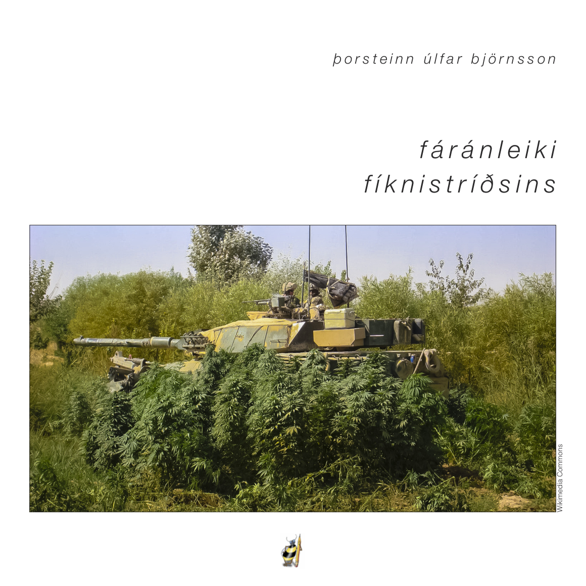Útgefin: 2019
Fíknistríðið hefur geisað frá 1971 með gífurlegum kostnaði, bæði í fé og í mannslífum en talið er að rúmar 40 milljónir manna liggi í valnum af völdum þess. Í bókinni er fjallað um hvers vegna því hafi verið hleypt af stokkunum og hvers vegna því sé ekki hætt og hvort það sé yfirleitt hægt eða jafnvel æskilegt.
Vísur Önnu Árnadóttur
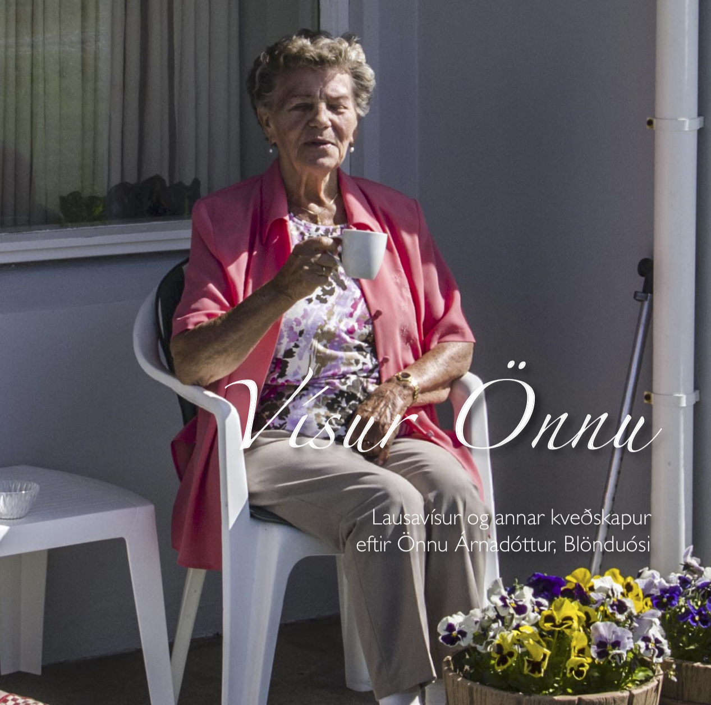Útgefin: 2017
Lausavísur eftir Önnu Árnadóttur frá Blönduósi. Þær voru teknar saman í tilefni 90 ára afmælis þessarar öðlingskonu og prentaðar í bók sem henni var færð á afmælinu. Þeir sem áhuga hafa á að eignast bókina geta pantað hana hér.
Fíkn, fíknisaga & fíknistríð
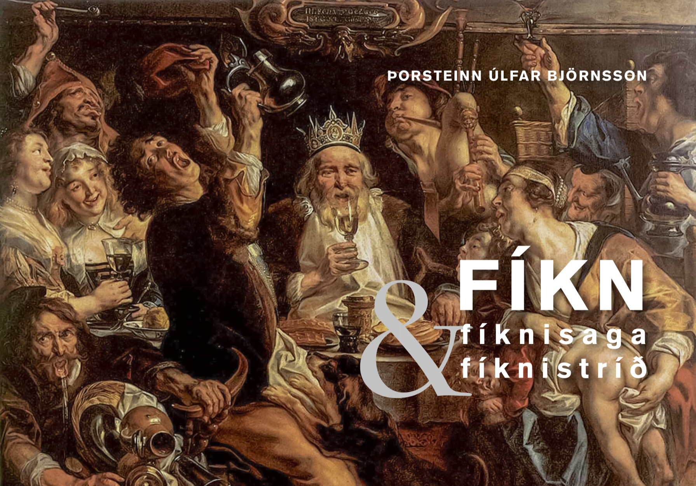Útgefin: 2016
Í bókinni er fjallað um fyrirbærið fíkn. Hvað hún er og af hveju hún stafar miðað við nýjustu vitneskju. Rakin er saga vímuefnanotkunar manna og dýra og fjallað um fíknistríðið. Þessi bók er ómissandi í umræðuna um vímuefnin.
Búsó - Svipmyndir úr búsáhaldabyltingunni
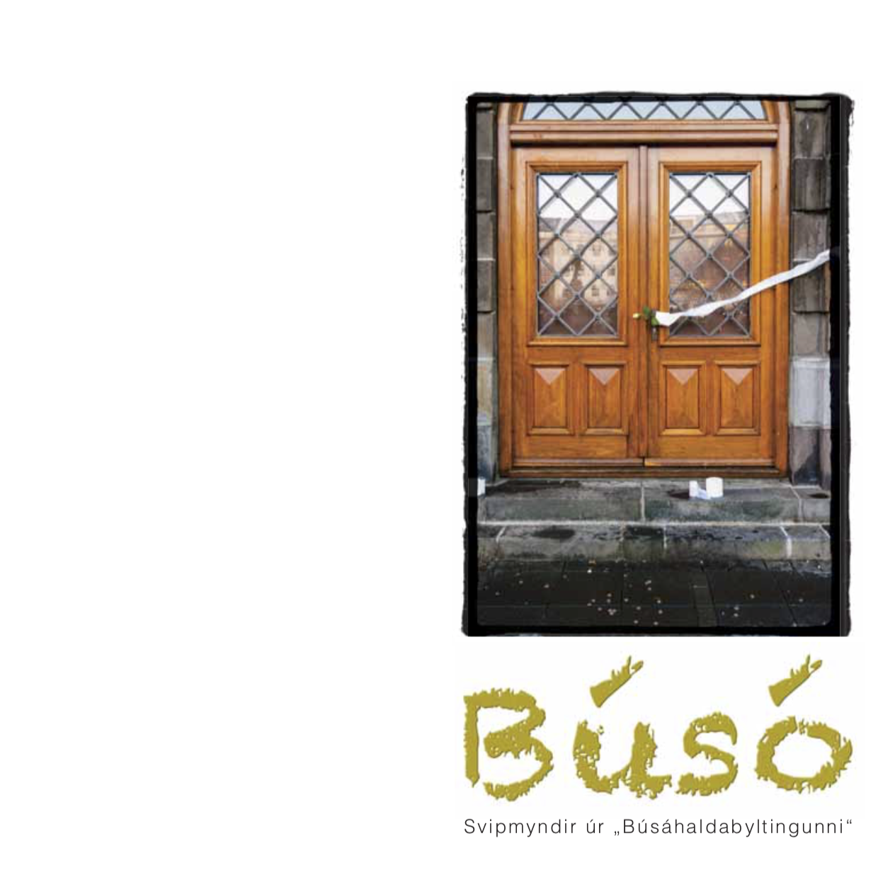Útgefin: 2015
Ljósmyndabók með hugleiðingum.
Il viaggio a Roma e Firenze
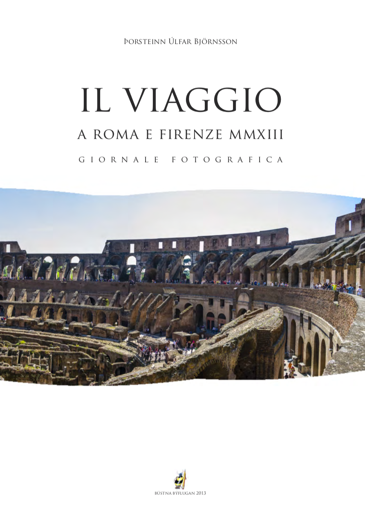Útgefin: 2013
For the first and only time ever I tried to make a book in Italian by courtesy of Google translate. Photobook of Rome and Florence from 2013.
Dóp! Notkun eða misnotkun?
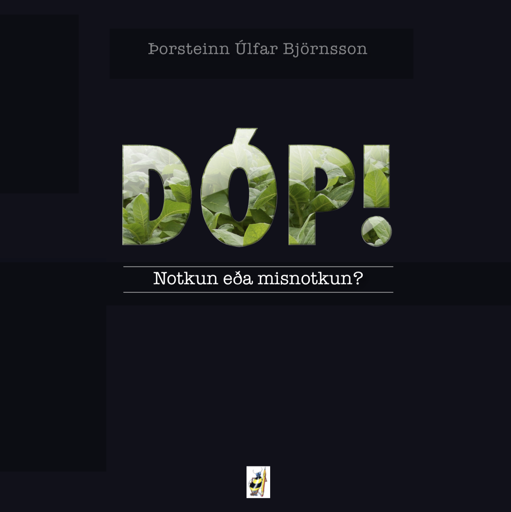Útgefin: 2012
Handbók um ábyrga afþreyingarnotkun nánast allra lyfja sem menn nota sem ætti að lesast af ungu fólki í félagsskap foreldra eða forráðamanna. Bókin fjallar um um skaðaminnkun og ráðstafanir sem hægt er að gera til að lágmarka hættu á notkun fíkniefna.
Hjalladalur
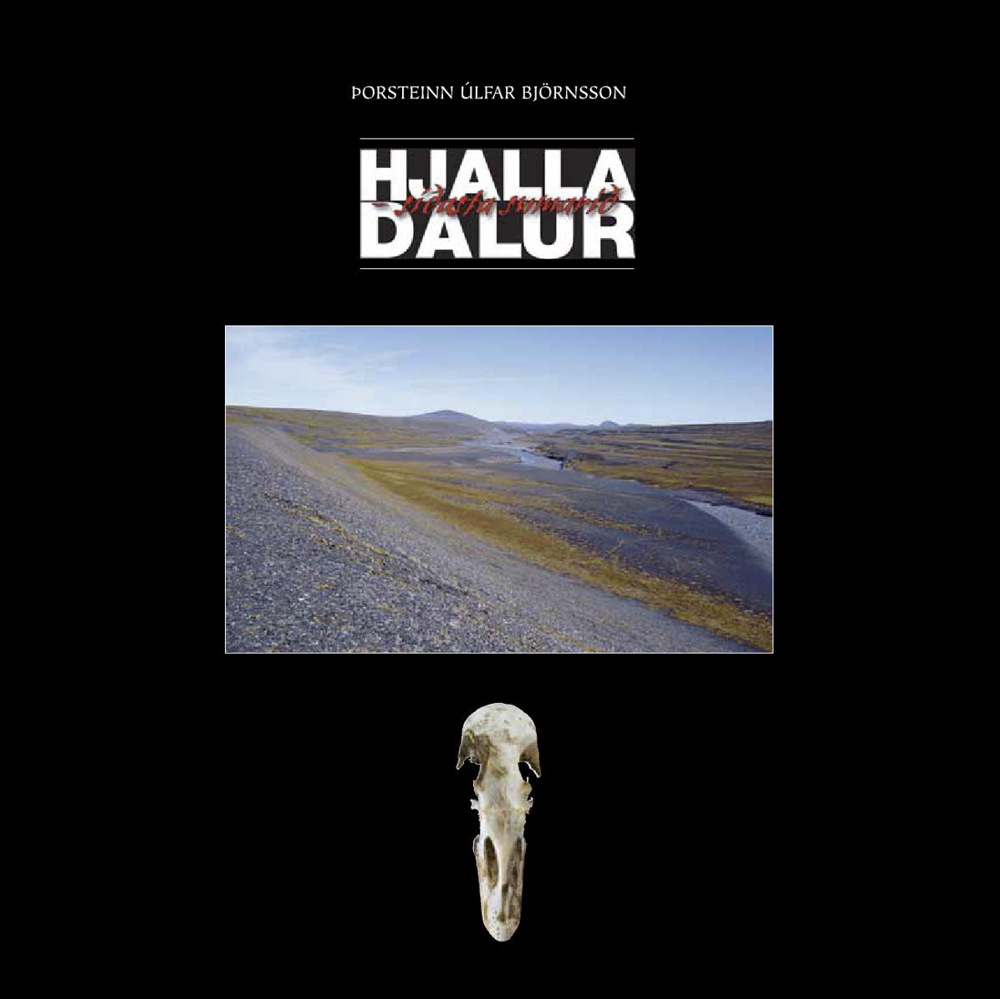Útgefin: 2008
Hjalladalur, – síðasta sumarið kom út í 100 árituðum og tölusettum eintökum 2011. Hún lýsir upplifun höfundar af stærsta umhverfisglæp sem framinn hefur verið á Íslandi.
Villigarðurinn – Garðyrkjuhandbók letingjans
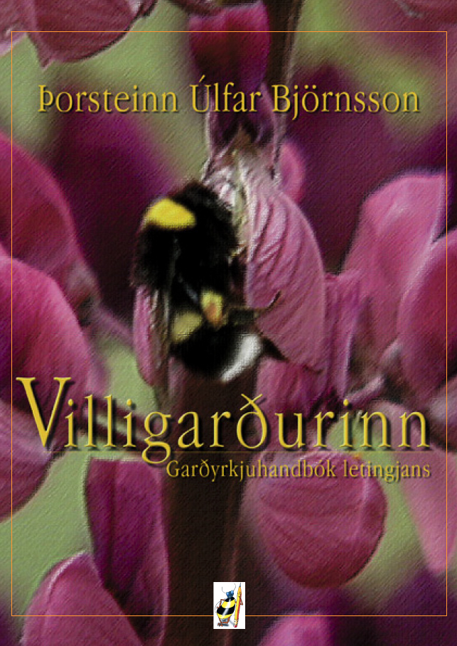Útgefin: 1997
Villigarðurinn kom út 1997 og hún hefur verið ófáanleg nema frá höfundi. Hún er ókeypis á Landsbókasafninu og fólk getur nálgast hana þar. Þegar maður les hana í dag sést að hún hefur verið svolítið á undan tíðarandanum.